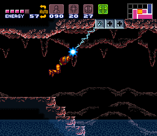
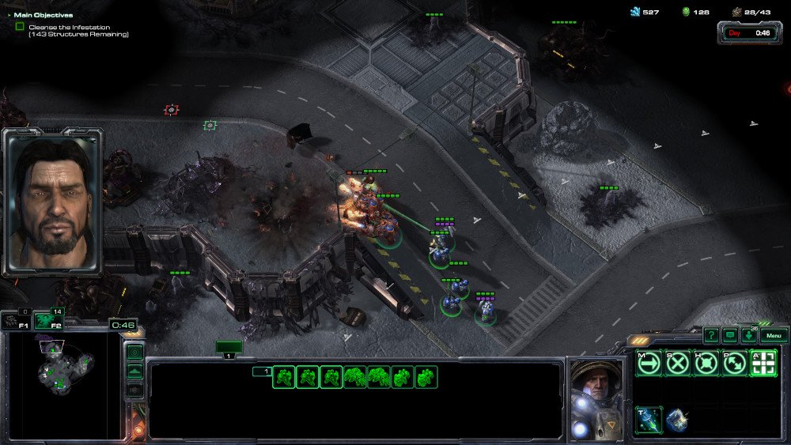

Minimap Design
This document presents a basic overview of how the minimap is designed for the unity project.
Requirements
The minimap can support a few different scenarios and requirements, let's define those at the start of this document.
- Show player's surroundings.
- Allow for easy navigation of virtual space.
- Highlight relevant information for a user.
- Allow player to focus on minimap to find important information.
Examples
This is a very broad definition of a minimap but there are a few existing high level minimap designs that could be derived from this.
The simplest minimap may be something that just shows the room the player is located in relative to previously explored rooms like in the game Super Metroid.

Image from Metroid Recon, Wikipedia Source Details Minimap in top right of screen.
{kind=link}
A more complex version of this minimap design may be something similar to Star craft 2's minimap which shows fog of war, terrain, units, as well as other important features and has navigation controls.
 Image from game StarCraft 2, Minimap in bottom left
Features
From the given requirements and examples above, we can define a set of features that satisfy these requirements.
There are many designs and layers to the minimap, but as a basic set of goals, the minimap would need to do the following:
- Show a high level view of the world.
- Show the player their position relative to the world.
- This can have varying levels of detail. For example, the Metroid map just shows the room the player is in while the StarCraft map highlights every unit in the player's vision.
- Expand to show new areas as the player explores them.
These capabilities implemented together should satisfy all the requirements we defined earlier.
Design Overview
The minimap component itself will be implemented similar to that of StarCraft and Metroid as a UI element on the screen. To implement the features described in the previous section, we will need to combine a few components and layers together.
View of World
The minimap itself should just show the world around the player. To make this the most simple, we can allow the end user to give the minimap a sprite/image texture to display as the base of the map.
We can then draw a scaled version of this image as the minimap on the screen.
We could generate this image from a terrain map or labeled structure but at the most general level, we simply need to draw an image on the screen.
Relative Position
Once we have the basic image down, we need to then show where the player is viewing the map.
The simplest way to do this is to make some sort of icon/drawing to show the player on the minimap. Again, the most general form of this would be just to draw a sprite on top of the minimap to show the player.
Additionally, sometimes a minimap can be too large so showing a zoomed in version of the minimap to highlight local features and having the center of the map move with the player may make it easier to view and read. This is how the map in metroid is configured.
However, this moving map feature is a more specialized feature as not every map needs this feature. For example, the StarCraft map provided earlier just draws a square to show the area the player is viewing.
Reveal New Areas
The last general feature I would like to add to the minimap is revealing new areas. With the StarCraft map as well as the Metroid map, the map expands and shows new area as the player explores them.
There are two main ways this could be implemented.
- Adding to the base map image every time a new area is explored.
- Having a cover over the original map and revealing parts of it as it is explored.
Since we assumed that the map would be a static image from an earlier step, revealing parts of the map would probably be the easiest method for implementing this.
Lots of image editing programs such as GIMP or PhotoShop have a concept of layers and masks. To achieve revealing the map from a cover, we simply would need to draw a layer over the original map and erase parts of the cover as the player explores new areas.
Other Features
Some additional features that seem to be in common use among many games include:
- Navigation via minimap
- Fog of war exploration
- Expanding to a full screen map
- Highlighting objects on the minimap